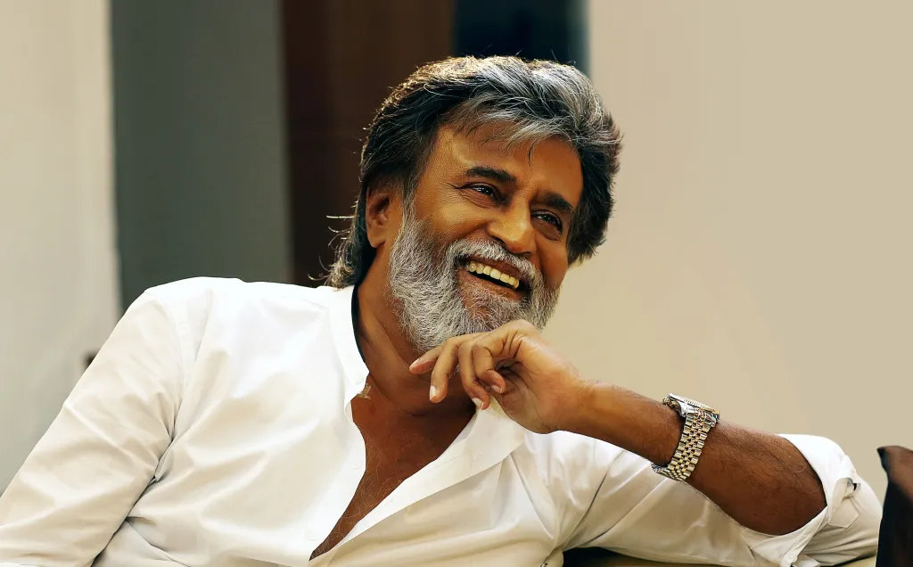

|  |
| RAJINIKANTH, born as Shivaji Rao Gaekwad on December 12, 1950, is a legendary Indian actor. He is one of the most popular and influential actors in Indian cinema, often referred to as "SUPER STAR" by his fans. Rajinikanth made his acting debut in 1975 with the Tamil film Apoorva Raagangal, directed by K. Balachander, who became his mentor. Rajinikanth's style, which includes his trademark walk, dialogue delivery, and quick movements, has made him a cult figure. |
 |
 |